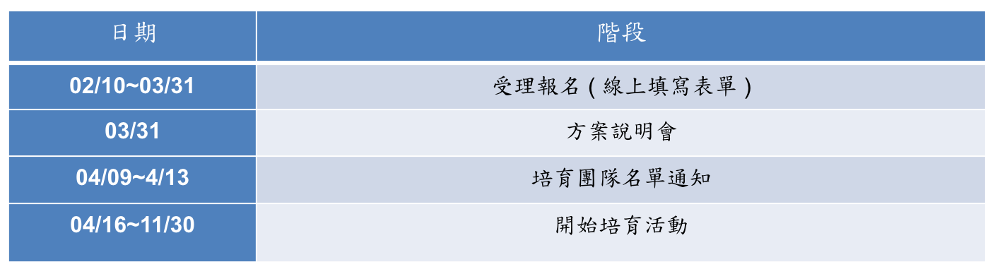

活動簡介
在數位轉型的時代，國際大廠紛紛投入開源技術開發，如 Google 、 Microsoft 、 Red Hat 等，幫助諸多重要開源專案成為穩定可靠的資訊建設基礎技術，使得營運開源專案成為國際大型企業發展創新技術與市佔率的手段之一。
為提升新世代的開源技術能力，資策會規劃「開源貢獻者培育方案」，徵求具國際級開源專案參與經驗者(Committer或類似資格)聘為 Mentor (註一)，同時招募對開源專案感興趣、或是目前已在開源社群參與者成為學員 ，以Mentor輔導學員的方式，共同投入國際開放程式源碼專案開發，回饋其成果至國際社群，並帶領學員熟悉成為開源Contributor或是Committer的程序，進一步累積年輕開發者開源技術的養成實力，在做中學的過程成為開源舞台明日之星，為自我能力加值，奠定日後就業的多元性，進而提升我國開源人才質量，以及活絡國內開源社群。
註一 Mentor：開源專案導師，協助新人進入開源世界，引導新進工程師開源技術養成方向，在做中學的過程整合產業創新研發與軟硬應用，一同投入國際開放程式源碼專案開發，並回饋其成果至國際社群。
徵求對象-資格與名額
方案執行機制


方案執行期程 
方案說明會相關資訊
申請方式
意願成為
Mentor
者，請完成填寫下列表單：
https://goo.gl/forms/gwml0kcFzPNJJkjA3
意願成為學員者，請完成填寫下列表單：
https://goo.gl/forms/9vF5OqclrLlUfZiP2